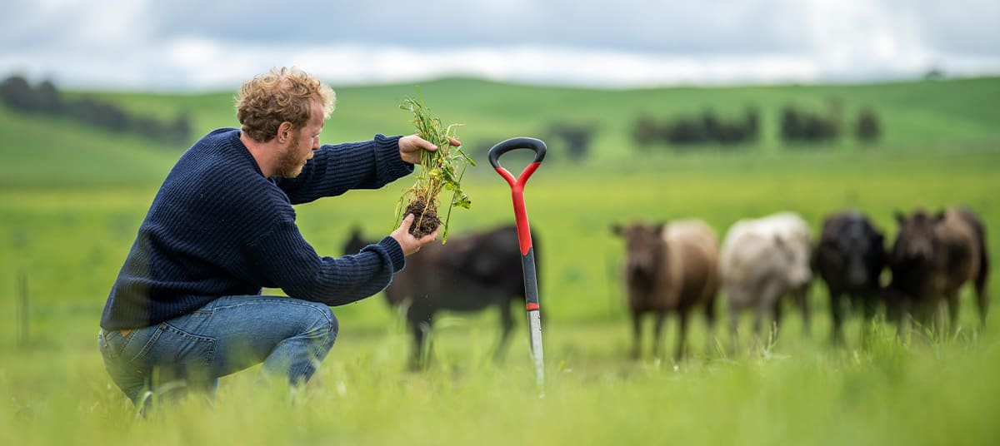
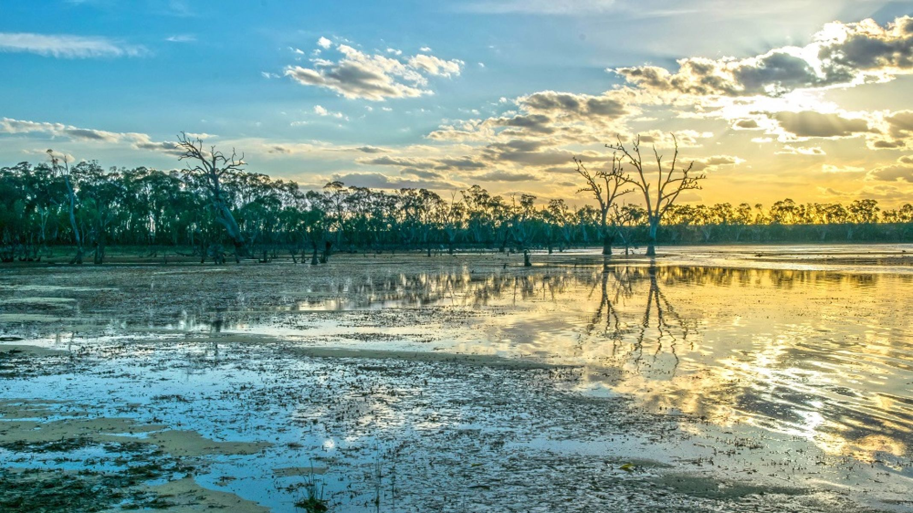
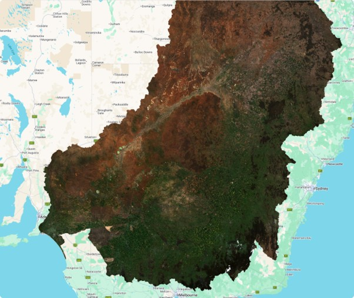

←
Each Farmers Impact
Purpose
Australian farmers across the Murray-Basin experience disproportionate levels of water security depending on geographical area, water entitlements and availability, The Farmer's Basin serves to contextualise and visualise how water security impacts farmers across the Murray-Darling Basin.
Explore Farmer Impact
- Compare Regional Security
 View Allocation Reliability
View Allocation Reliability- Assess Water Market Conditions
- Farmer Profiles
- Compare Policy Impacts
- Review Economic Indicators & Risk
